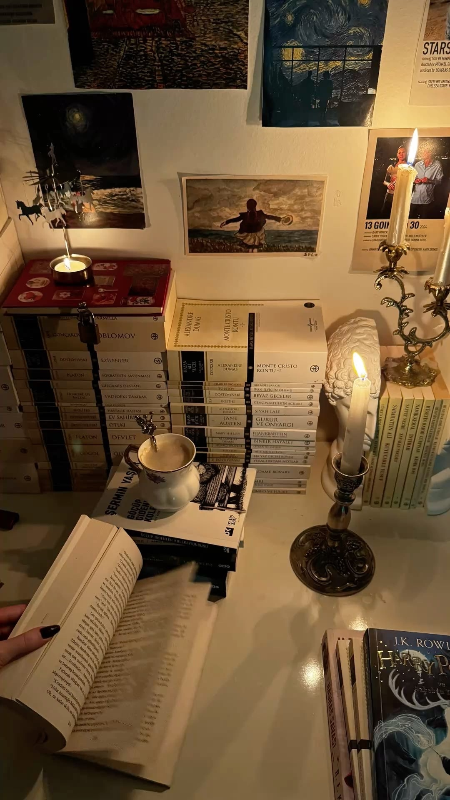

Мои увлечения
Чтение
Люблю читать художественную и (немного) техническую литературу. В среднем прочитываю 20–40 книг в год. В 2025 году прочитал больше 60 книг - это мой рекорд. Чтение мне нравится тем, что оно погружает в другой мир. Почти всегда читаю в запой.

Мои любимые книги (топ ???):
Вообще, я не могу сказать, что какая-то книга мне нравится больше остальных. Для меня все книги по своему удивительны и интересны. Поэтому просто приведу список книг, которые я прочитал начиная с 1 января 2026 года.
- Эрих Мария Ремарк «Возвращение»
- Анатолий Рыбаков «Дети Арбата»
- Ри Гува «Черный белый», «Серый лес», «Цвет тишины»
- Колин Гувер «Уродливая Любовь»
- Дэвид Гоггинс «Меня не сломать»
- Фёдор Михайлович Достоевский «Подросток»
- Фёдор Михайлович Достоевский «Белые ночи»
- Фёдор Михайлович Достоевский «Сон смешного человека»
- Пришвин Михаил «Кладовая солнца»
- Владимир Березин «Путевые знаки»
- Шимун Врочек «Питер»
- Николай Гоголь «Невский проспект»
- Шимун Врочек «Питер. Война»
- Шимун Врочек «Питер. Битва близнецов»
- Андрей Дьяков «К свету»
- Андрей Дьяков «Во мрак»
- Андрей Дьяков «За горизонт»
- Эрих Мария Ремарк «Чёрный обелиск»
- Эрих Мария Ремарк «Приют грёз» - Читаю прямо сейчас.
Жанры, которые я предпочитаю:
- Классическая литература — Достоевский, Толстой, Булгаков
- Научная фантастика — Азимов, Брэдбери, Стругацкие
- Техническая литература — книги по программированию
Полезные ссылки для читателей
- LiveLib — социальная сеть для читателей
- Goodreads — международный сайт с рекомендациями
- Литрес — электронные и аудиокниги
- Ozon Книги — покупка книг с доставкой
- Википедия — для справок
Цитаты, которые меня вдохновляют
«Дурак, признавший, что он дурак, уже не дурак.» — Фёдор Достоевский
«Одиночество не в том, когда человек один, а в том, когда его никто не понимает.» — Фёдор Достоевский